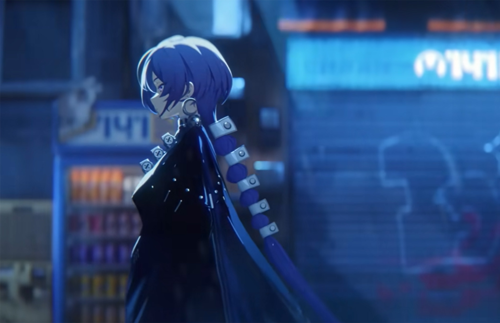
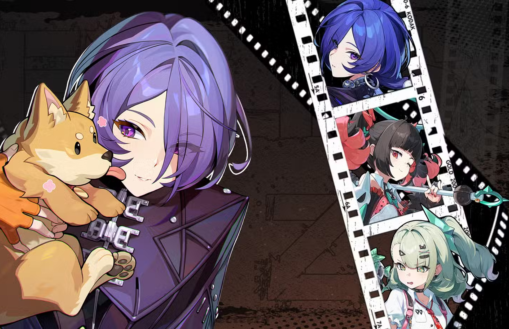
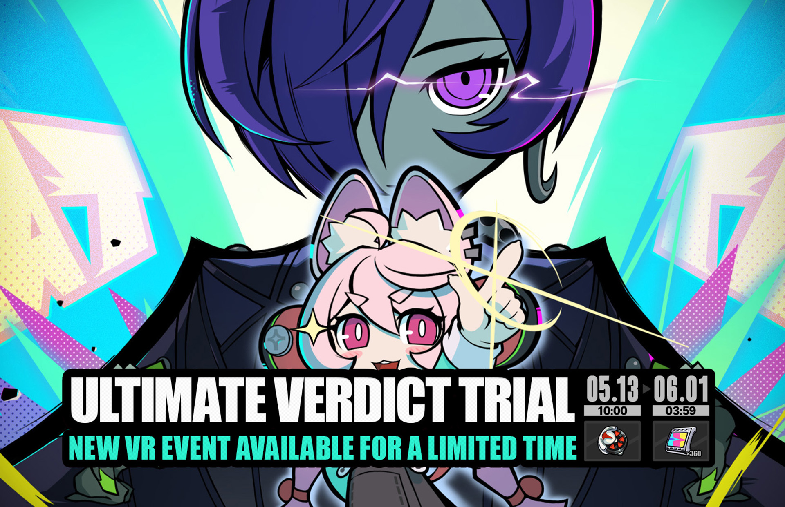

New Agent: Promeia
Promeia's release immediately changes the atmosphere of Version 2.8. From her sharp visual design to her calm, controlled presence, everything about the new S-Rank Agent feels engineered to dominate attention. Her reveal became one of the biggest talking points leading into the patch, with players already debating team compositions, pull value, and how she fits into the future of the game's evolving meta.
Beyond combat, Promeia continues Zenless Zone Zero's trend of blending futuristic style with strong character identity. Her design pulls from the game's urban aesthetic while still feeling distinct from previous agents, reinforcing the stylish and cinematic direction that defines New Eridu. Even before release, fan art, edits, and discussion surrounding the character spread quickly across the community.

Early gameplay previews suggest that Promeia is designed around precision, control, and fast burst damage. Players immediately began testing potential team combinations alongside existing Electric and Support Agents, with many expecting her to become one of the patch's strongest additions. Across the community, discussion quickly shifted from simple first impressions to deeper analysis of her combat role and long-term value.
Her release also continues Zenless Zone Zero's focus on highly stylized character presentation. From cinematic animations to dense UI effects, Promeia's combat sequences feel designed to match the game's energetic, urban atmosphere. Even outside of gameplay, her visual identity fits naturally within New Eridu's futuristic culture, blending fashion-forward details with industrial design elements.

Theorycrafting around Promeia began almost immediately after her official reveal. Players have already proposed multiple high-performing team compositions built around aggressive rotations, quick stuns, and sustained pressure during encounters. While final balance impressions will continue to evolve after release, early reactions suggest that she may become one of the patch's defining Agents.
